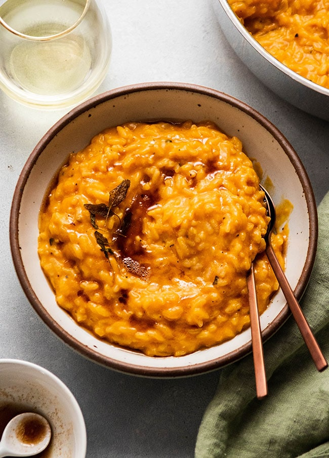

Butternut Squash Risotto Recipe

This risotto is perfect for chilly fall evenings.
As soon as the leaves begin to turn color, I rush to the grocery
store to pick up the ingredients for this fall recipe. This rich
risotto will be your new go-to!
Ingredients
For the risotto:
- 1 cup arborio rice
- 32 oz chicken stock
- 1 large onion, finely diced
- 1-2 cups dry white wine
- 1 8oz block parmesan cheese, grated
For the butternut puree:
- 1 butternut squash, halved and deseeded
- Sage leaves
- 1 cup chicken stock
- Olive oil
- Salt
- Pepper
For the garnishments:
- 6 tbsps butter
- Sage leaves
- Salt
- Bacon
- Mapple syrup
Cooking Instructions:
For the butternut puree:
- Preheat oven to 400 degrees
- Cover your halved butternut squash with olive oil, salt, and pepper
- Stuff the holes with sage leaves
- Turn your squash face down and roast for 45-60 minutes, or until completely soft throughout
- Remove the skin and sage leaves, and add roasted squash to a blender with chicken stock
- Blend until smooth
For the risotto:
- Begin heating your chicken stock in a small pot
- In a larger pot, begin sauteeing your onions in some olive oil until translucent
- Add in arborio rice, stirrin until edges begin to turn translucent
- Add in your white wine, stir until alcohol is cooked out
- Stirring constantly add in chicken stock one ladleful at a time, until fully absorbed
- Continue last step until arborio rice is cooked through, add in butternut puree and maple syrup
- Add in parmesan cheese and salt and pepper to taste
Garnishments:
- Cook bacon until crispy, dice into small bits
- Add sage and butter into a small saucepan, cook over low to medium heat until butter has browned
Return to home